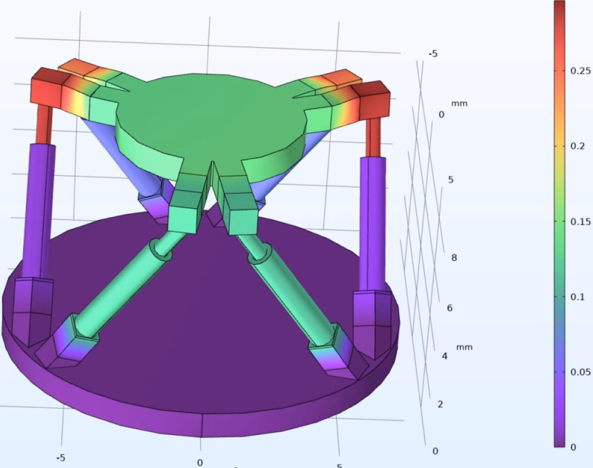

Hybrid hexapod robot with soft joints
Shaping the Next Era of Robotics in Miniaturized Scale
Bridging Precision and Adaptability: The Evolution of the Hybrid Hexapod Robot with Soft Joints
1. The Conventional Hexapod: Precision through Rigidity
For decades, the Gough-Stewart hexapod robot has been a benchmark for high-precision positioning and motion control in fields ranging from aerospace simulations to surgical robotics. This six-legged parallel manipulator is composed of rigid links interconnected through ball-and-socket joints, allowing it to perform controlled 6-degree-of-freedom (DOF) movements with exceptional accuracy. The system's stiffness ensures stability, repeatability, and load-bearing capacity, making it ideal for applications requiring high mechanical precision, such as CNC machining, spacecraft testing, and optical alignment systems. However, while rigidity brings accuracy, it also imposes limitations:
- The robot lacks compliance, making it prone to structural stress and impact damage when interacting with dynamic or uncertain environments.
- The fixed stiffness of its rigid joints makes it unsuitable for handling delicate tasks in human-robot collaboration or biomedical procedures.
- Its movements, though precise, are mechanically constrained by the fixed degrees of freedom inherent in ball-and-socket joints.
These limitations have led researchers to explore the next frontier in robotics— Soft Robotics.
2. The Paradigm Shift: Soft Robotics and Bio-Inspired Motion
The field of soft robotics has emerged as a revolutionary approach that draws inspiration from biological systems, where compliance and adaptability define movement. Instead of relying solely on rigid components, soft robots integrate flexible materials, fluid-actuated structures, and deformable joints, allowing them to:
- Mimic the fluid motion of living organisms (e.g., octopus tentacles, elephant trunks).
- Adapt to unstructured environments by absorbing external forces rather than resisting them.
- Enable safer human-robot interactions, crucial in medical applications such as robotic-assisted surgery and rehabilitation devices.
- Reduce mechanical stress and wear, improving longevity and operational efficiency.
However, soft robots, despite their remarkable compliance, face challenges in precision control, force transmission, and load-bearing capabilities, areas where rigid robots traditionally excel. This creates a technological gap between stiffness for precision and flexibility for adaptability.
The answer? A hybrid approach—combining the strengths of both rigid mechanics and soft actuation.
3. The Hybrid Hexapod: Merging Rigid Strength with Soft Compliance
The Hybrid Hexapod Robot with Soft Joints represents a breakthrough in robotic adaptability, integrating the precision and load-bearing stability of a conventional Gough-Stewart platform with the compliant flexibility of soft robotics. This novel design introduces soft, elastomer-based spherical joints at key connection points while retaining rigid links for structural integrity.
Key Benefits of the Hybrid Approach:
- Enhanced Dexterity: Soft joints allow greater angular deflection, enabling expanded motion ranges in biomedical and industrial applications.
- Shock Absorption & Impact Resistance: The hybrid hexapod can dissipate forces dynamically, making it suitable for unstructured terrains, human interaction, and delicate material handling.
- Precision Meets Adaptability: The combination of rigid links and soft joints ensures that high-load operations can be executed with precise control, while adaptive tasks benefit from compliant joint flexibility.
- Energy Efficiency & Reduced Wear: Soft joints minimize frictional losses and mechanical fatigue, extending the operational lifespan of the system.
4. A Future of Smarter, More Adaptive Robots
 The Hybrid Hexapod Robot with Soft Joints marks a significant step toward the next generation of robotics, where rigid control and soft adaptability coexist. By merging the best of both paradigms, this hybrid innovation unlocks new possibilities in aerospace, medical robotics, industrial automation, and space exploration, paving the way for robots that can interact with their environment intelligently, safely, and efficiently.
With precision of the past and flexibility of the future, the hybrid hexapod represents a harmonized evolution in robotic engineering, setting the stage for a new era of intelligent, responsive, and resilient robotic systems. For further inquiries or collaboration opportunities, feel free to reach out to me or my coleagues at FEMTO-ST Institute, Univ. Bourgogne Franche-Comté.